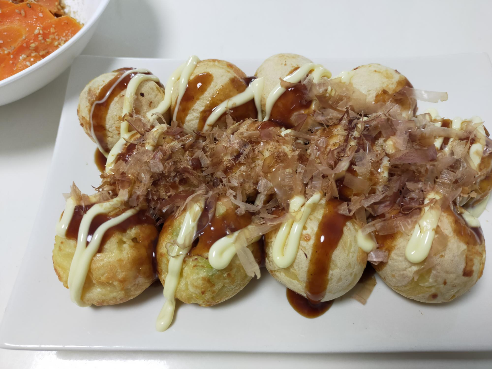

たこ焼き
材料・金額
| 材料 | 購入金額 | 使用量 | 金額 | kcal |
|---|---|---|---|---|
| お好み焼き粉1kg | 246 | 150g | 37 | 516 |
| ねぎ3本 | 214 | 1/2本 | 36 | 9 |
| 卵1pac | 192 | 2個 | 38 | 152 |
| たこ1pac | 413 | 100g | 413 | 76 |
| 水 | - | 400cc | - | - |
| お好み焼きソース （トッピング） |
- | 大2 | - | 46 |
| マヨネーズ （トッピング） |
- | 大2 | - | 168 |
| かつお節 （トッピング） |
102 | 1pac | 17 | - |
| 合計24個 | - | - | 541 | 967 |
| 1人分（合計×0.5） | - | - | 271 | 484 |
作り方
- たこは、たこ焼きに入るサイズに切って、塩を入れた水を沸かしさっと茹でておく
- ネギはみじん切り
- ボールに、お好み焼き粉、水、卵混ぜてタネを作っておく
- たこ焼き器に油を引いて熱し、タネの7割程度を流し入れる
- たこをそれぞれにいれていく
- タネの残りを流しいれ、上からネギを広げ、ころがしながら、こんがり焼いていく
振り返り
業務スーパーのお好み焼き粉を、悪くなる前に使い切ろうと、たこ焼きにしました。
旦那さんの「たこ焼きっておやつって感じじゃない？」に「じゃあ、ごはんと味噌汁つけて定食にする？」と答え、ランチとして押し切りました（←ごはん、味噌汁をつければ何でも定食になると思っている）。
たこ焼きを1人12個食べたらおなか一杯で、定食にはできませんでしたが、おいしくいただきました。